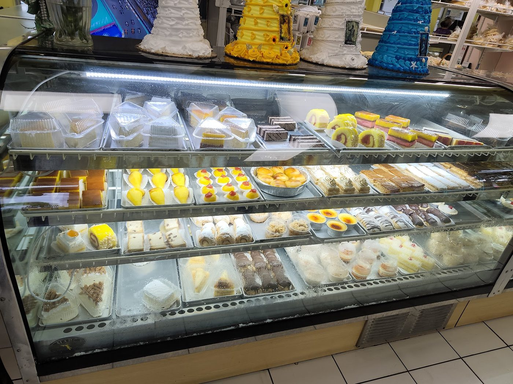

Arahis Bakery is a family-owned Cuban bakery and cafeteria at 745 SW 8th Street, in the heart of Little Havana. For decades it has done one thing well: honest Cuban food and coffee at prices the neighborhood can afford.
Bakery y cafeteria
The bakery side turns out guava pastelitos, croquetas, Cuban bread, cakes, and flan. The cafeteria side presses Cuban sandwiches and pours cafecito strong enough to carry the morning crowd on 8th Street.
There is no website and no pretense here. Just a family kitchen on Calle Ocho that has fed Little Havana for generations of regulars, at prices the neighborhood can afford.
Take-out and delivery are available for everything in the case and on the press.

Reviewers keep naming the same two things: the pastelitos and the strong Cuban coffee.
The other thing reviewers mention: the people behind the counter.